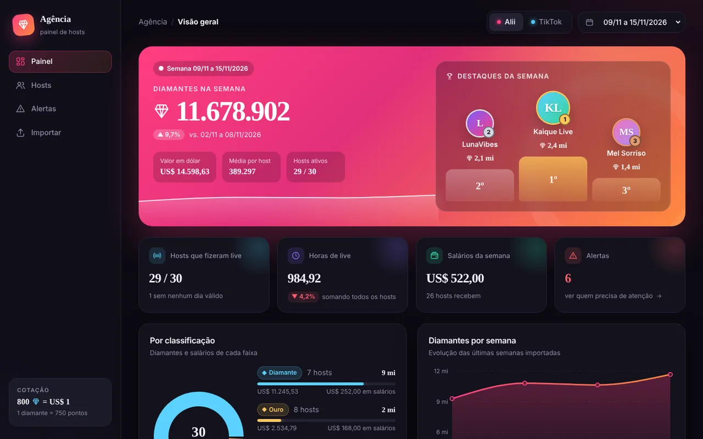

Ferramenta interna, demonstração com dados fictícios
Painel da Agência
A agência de streamers onde eu trabalho controlava os pagamentos semanais em PDF e planilha. Criei um painel que lê esse relatório e mostra ranking, evolução semana a semana e quem precisa de atenção.
- Leitura do PDF no servidor e gravação no MongoDB Atlas
- Ranking, variação semanal e alertas automáticos (sem live, salário perdido, queda forte)
- Página de cada host com histórico, anotações e atalho para o WhatsApp
- React
- Vite
- Recharts
- Node.js
- Express
- MongoDB
- Mongoose
- pdf.js